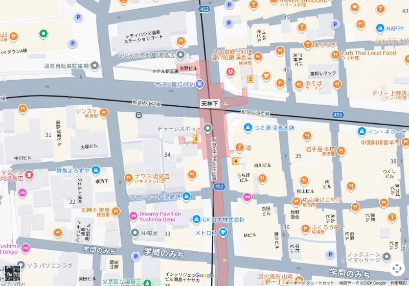

株式会社けいか堂飲料店Kadoya Group / Yushima, Tokyo
株式会社けいか堂飲料店Kadoya Group / Yushima, Tokyo
ENGLISH
湯島天神下の酒場４店舗｜全店 18:00〜深夜・日曜定休
03-3831-4775（バーカドヤ）
東京メトロ湯島駅から徒歩1〜3分。角地のバー「カドヤ」から始まった私たちの酒場は、宮城北部の食と酒を届ける「くりはら屋」、〆の蕎麦が名物の「蕎麦酒場 角ヤ」へと広がりました。どの店も夜6時から深夜まで、ふらりと立ち寄れる距離に並んでいます。
４店舗すべて文京区湯島3丁目。湯島駅（千代田線）徒歩1〜3分、上野広小路・上野御徒町・御徒町駅からも徒歩圏です。


日替わりのおすすめや営業時間の変更は、各店のInstagramでお知らせしています。
４店舗はすべて湯島天神のふもと、徒歩2分圏内に集まっています。

1バーカドヤ 2くりはら屋 3角ヤ 湯島天神 4角ヤ 春日テラス